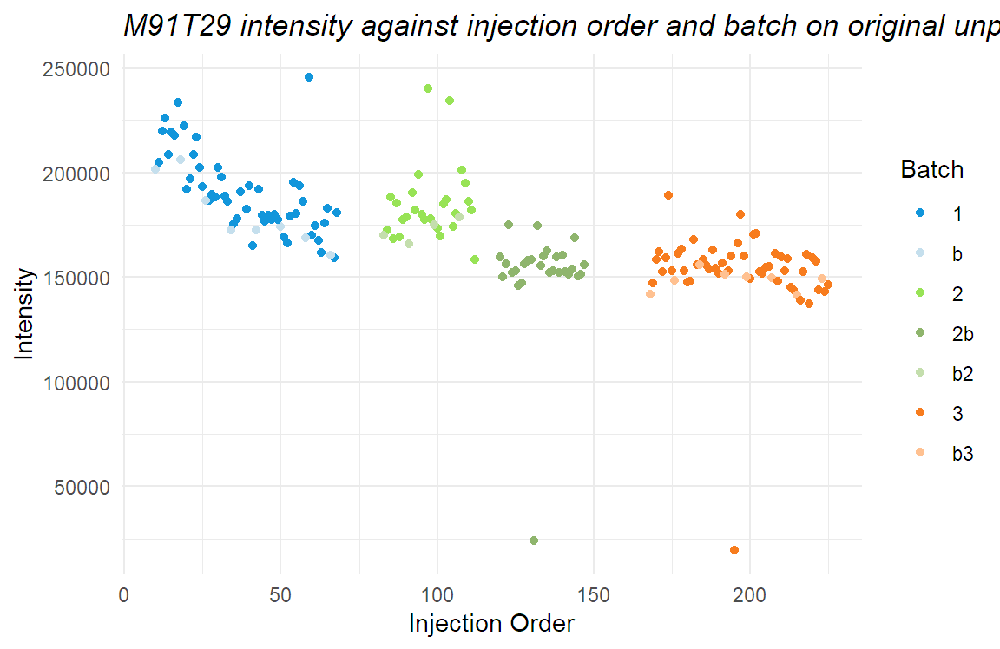
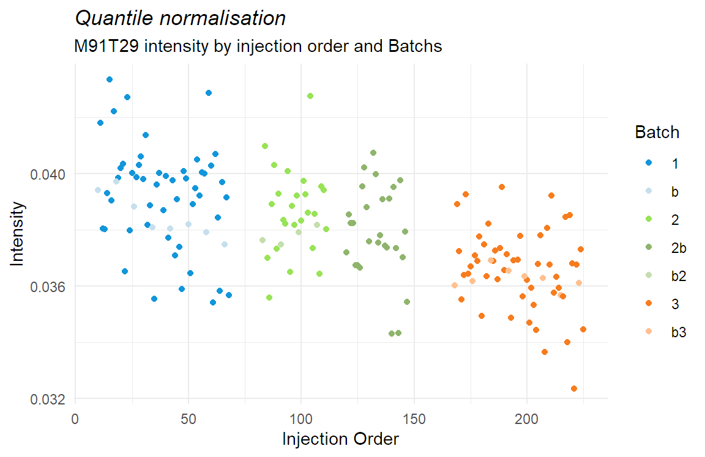
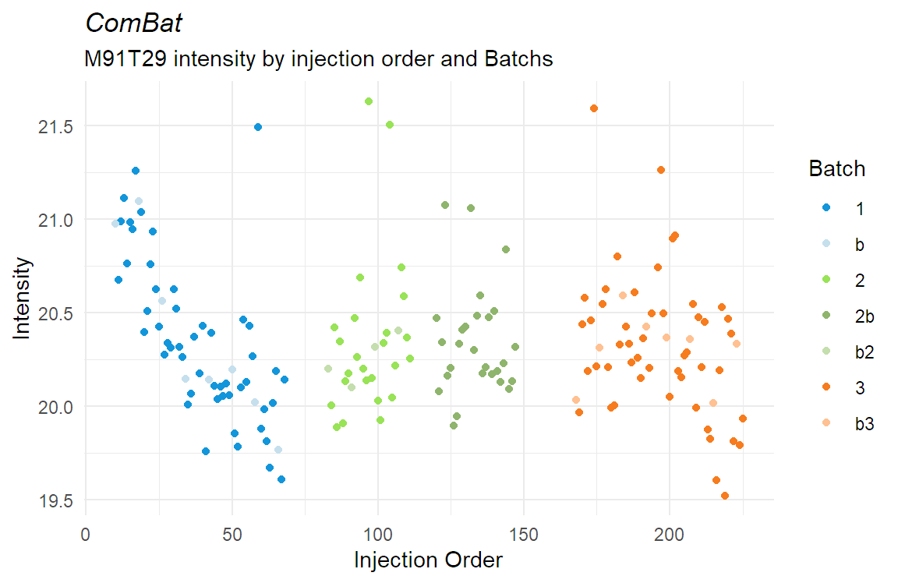
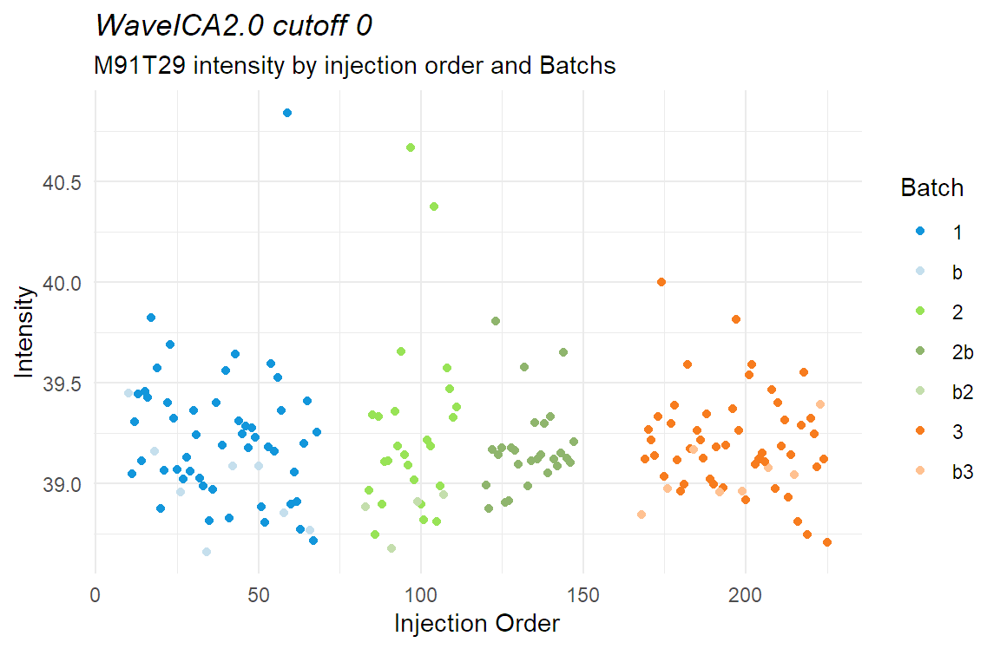
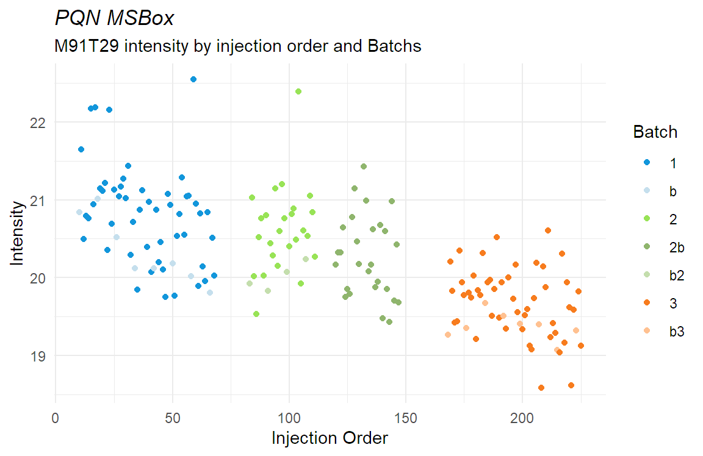
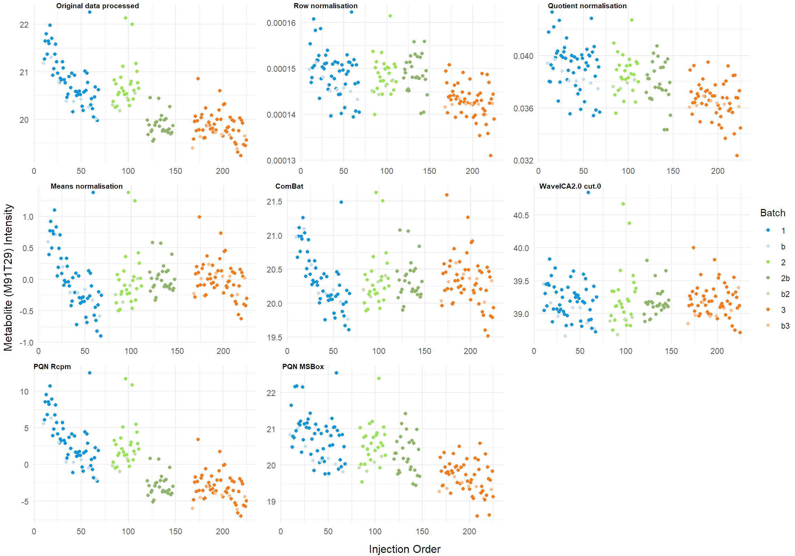
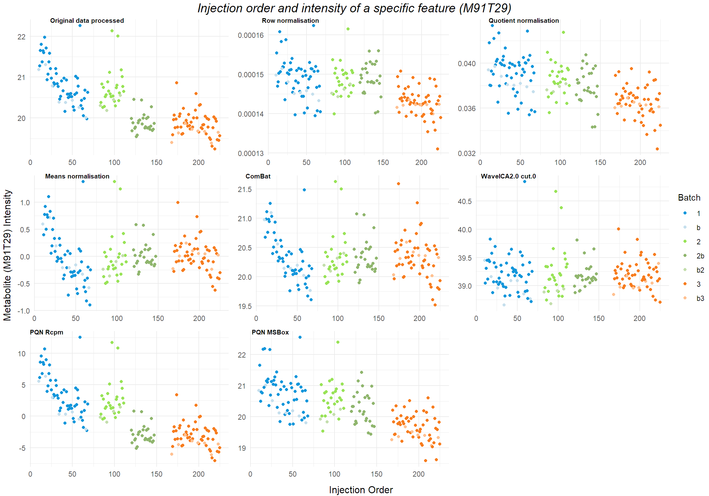

Metabolites Visualizations
Marc
15/4/2022
Last updated: 2022-05-30
Checks: 6 1
Knit directory: workflowr/data/
This reproducible R Markdown analysis was created with workflowr (version 1.7.0). The Checks tab describes the reproducibility checks that were applied when the results were created. The Past versions tab lists the development history.
Great! Since the R Markdown file has been committed to the Git repository, you know the exact version of the code that produced these results.
Great job! The global environment was empty. Objects defined in the global environment can affect the analysis in your R Markdown file in unknown ways. For reproduciblity it’s best to always run the code in an empty environment.
The command set.seed(20220214) was run prior to running the code in the R Markdown file. Setting a seed ensures that any results that rely on randomness, e.g. subsampling or permutations, are reproducible.
Great job! Recording the operating system, R version, and package versions is critical for reproducibility.
Nice! There were no cached chunks for this analysis, so you can be confident that you successfully produced the results during this run.
Using absolute paths to the files within your workflowr project makes it difficult for you and others to run your code on a different machine. Change the absolute path(s) below to the suggested relative path(s) to make your code more reproducible.
| absolute | relative |
|---|---|
| C:/Users/mysit/Documents/Bioinformatica/Semestre_4/workflowr/data | . |
Great! You are using Git for version control. Tracking code development and connecting the code version to the results is critical for reproducibility.
The results in this page were generated with repository version 4c255be. See the Past versions tab to see a history of the changes made to the R Markdown and HTML files.
Note that you need to be careful to ensure that all relevant files for the analysis have been committed to Git prior to generating the results (you can use wflow_publish or wflow_git_commit). workflowr only checks the R Markdown file, but you know if there are other scripts or data files that it depends on. Below is the status of the Git repository when the results were generated:
Ignored files:
Ignored: .Rhistory
Ignored: .Rproj.user/
Ignored: data/.Rhistory
Ignored: data/Demo for WaveICA/
Untracked files:
Untracked: data/.Rprofile
Untracked: data/.gitignore
Untracked: data/NOREVA.2.1.1.tar.gz
Untracked: data/TraceAge_bloodspots_t3_neg_clean.csv
Untracked: data/TraceAge_bloodspots_t3_pos_clean.csv
Untracked: data/bn_after_norm.rds
Untracked: data/bn_before_norm.rds
Untracked: data/bn_means.rds
Untracked: data/bn_test.rds
Untracked: data/combat_model.rds
Untracked: data/data_for_BN.RData
Untracked: data/error_glmnet
Untracked: data/error_glmnet.RDS
Untracked: data/error_glmnet_wave.RDS
Untracked: data/error_init_glmnet
Untracked: data/error_init_glmnet.RDS
Untracked: data/error_init_rf
Untracked: data/error_init_rf.RDS
Untracked: data/error_models_GLMNET.RDS
Untracked: data/error_models_RF.RDS
Untracked: data/error_rf.RDS
Untracked: data/error_rf_wave.RDS
Untracked: data/mdf.rds
Untracked: data/mdf_4throot.rds
Untracked: data/mdf_MSBox.rds
Untracked: data/mdf_Rcpm.rds
Untracked: data/mdf_combat.rds
Untracked: data/mdf_extreme_values_removed.rds
Untracked: data/mdf_meansnorm.rds
Untracked: data/mdf_original.rds
Untracked: data/mdf_pca_outliers_removed.rds
Untracked: data/mdf_processed.rds
Untracked: data/mdf_qc_removed.rds
Untracked: data/mdf_robustnorm.rds
Untracked: data/mdf_sumtoone.rds
Untracked: data/mdf_wave01good.rds
Untracked: data/mdf_wave03good.rds
Untracked: data/mdf_wave05good.rds
Untracked: data/mdf_wave07good.rds
Untracked: data/mdf_wave0good.rds
Untracked: data/mdf_wave2good.rds
Untracked: data/mdf_wave_0.rds
Untracked: data/mdf_wave_01.rds
Untracked: data/mdf_wave_02.rds
Untracked: data/mdf_wave_03.rds
Untracked: data/mdf_wave_04.rds
Untracked: data/mdf_wave_05.rds
Untracked: data/mdf_wave_06.rds
Untracked: data/mdf_wave_07.rds
Untracked: data/mdf_wave_08.rds
Untracked: data/mdf_wave_09.rds
Untracked: data/mdf_wave_1.rds
Untracked: data/model_tests.rds
Untracked: data/models.RData
Untracked: data/models_ranger.RData
Untracked: data/models_waveICA2.0.RData
Untracked: data/packrat/
Untracked: data/pqn_msbox.rds
Untracked: data/pqn_rcpm.rds
Untracked: data/sample_order_traceage_wp2_sample_overview.xlsx
Untracked: data/test_peptides.txt
Untracked: data/waveICA_models.rds
Untracked: models.RData
Note that any generated files, e.g. HTML, png, CSS, etc., are not included in this status report because it is ok for generated content to have uncommitted changes.
These are the previous versions of the repository in which changes were made to the R Markdown (analysis/metabolites_visualizations.Rmd) and HTML (docs/metabolites_visualizations.html) files. If you’ve configured a remote Git repository (see ?wflow_git_remote), click on the hyperlinks in the table below to view the files as they were in that past version.
| File | Version | Author | Date | Message |
|---|---|---|---|---|
| html | e81c5f5 | marcsole96 | 2022-05-01 | Build site. |
| html | 54b4215 | marcsole96 | 2022-04-18 | Build site. |
| Rmd | af43115 | marcsole96 | 2022-04-18 | things done |
| html | e6e9015 | marcsole96 | 2022-04-16 | Build site. |
| Rmd | f99c59e | marcsole96 | 2022-04-16 | stuff |
Libraries
Data loading
WD <- getwd()
if(WD!="C:/Users/mysit/Documents/Bioinformatica/Semestre_4/workflowr/data"){
setwd("../workflowr/data")
}
A_mdf_original<-readRDS("../data/mdf_original.rds")
B_mdf_4throot<-readRDS("../data/mdf_4throot.rds")
C_mdf_pca_outliers_removed<-readRDS("../data/mdf_pca_outliers_removed.rds")
D_mdf_extreme_values_removed<-readRDS("../data/mdf_extreme_values_removed.rds")
E_mdf_qc_removed<-readRDS("../data/mdf_qc_removed.rds")
F_mdf_sumtoone<-readRDS("../data/mdf_sumtoone.rds")
G_mdf_robustnorm<-readRDS("../data/mdf_robustnorm.rds")
H_mdf_meansnorm<-readRDS("../data/mdf_meansnorm.rds")
I_mdf_combat<-readRDS("../data/mdf_combat.rds")
J_mdf_wave_0<-readRDS("../data/mdf_wave_0.rds")
K_mdf_Rcpm<-readRDS("../data/mdf_Rcpm.rds")
L_mdf_MSBox<-readRDS("../data/mdf_MSBox.rds")
wave_0<-readRDS("../data/mdf_wave_0.rds")
wave_03<-readRDS("../data/mdf_wave_03.rds")
wave_05<-readRDS("../data/mdf_wave_05.rds")
wave_07<-readRDS("../data/mdf_wave_07.rds")
wave_1<-readRDS("../data/mdf_wave_1.rds")
sampleorder <- read_excel("../data/sample_order_traceage_wp2_sample_overview.xlsx") %>% as.data.frame()New names:
* `` -> ...17
* `` -> ...18
* `` -> ...19
* `` -> ...20sampleorder<-sampleorder %>% select(Sample, `Injection order positive`)
names(sampleorder)[1]<-"sample"Identifying metabolites with high variance on the “before normalization” data
#Finding a metabolite with high variance
variances <- apply(X=D_mdf_extreme_values_removed[7:(ncol(D_mdf_extreme_values_removed))], MARGIN=2, FUN=var)
sorted <- sort(variances, decreasing=TRUE, index.return=TRUE)$ix[1:20] # replace 2 with 100 ...
names(D_mdf_extreme_values_removed[, sorted]) [1] "M362T251" "M430T628" "M91T29" "M226T354" "M840T241"
[6] "M807T412" "M731T761" "M772T670_2" "M874T32" "M766T835"
[11] "M908T1097" "M739T832" "M799T415" "M431T740" "M867T404_1"
[16] "M663T1113" "M976T1097" "M898T417_1" "M629T418" "M838T350_2"Plotting how the normalization methods change the batch effect
Original data
original <- merge(A_mdf_original,sampleorder,by=c("sample"), all = F) %>% relocate(`Injection order positive`, .before = sample)
poriginal<-original %>% ggplot(aes(`Injection order positive`,M91T29)) + geom_point(aes(colour = factor(batch))) + scale_color_brewer(palette = "Paired") +labs(color = "Batch") + theme(axis.title.x = element_blank(),
axis.title.y = element_blank())
original %>% ggplot(aes(`Injection order positive`,M91T29)) + geom_point(aes(colour = factor(batch))) + scale_color_brewer(palette = "Paired") +labs(color = "Batch") + ggtitle("Metabolite intensity and injection order on original unprocessed data") + theme(plot.title = element_text(face = "italic"))
After removing extreme values and applying 4th root transformation
extremes <- merge(D_mdf_extreme_values_removed,sampleorder,by=c("sample"), all = F) %>% relocate(`Injection order positive`, .before = sample)
pextremes<-extremes %>% ggplot(aes(`Injection order positive`,M91T29)) + geom_point(aes(colour = factor(batch))) + scale_color_brewer(palette = "Paired") +labs(color = "Batch") + theme(axis.title.x = element_blank(),
axis.title.y = element_blank())
extremes %>% ggplot(aes(`Injection order positive`,M91T29)) + geom_point(aes(colour = factor(batch))) + scale_color_brewer(palette = "Paired") +labs(color = "Batch") + ggtitle("Metabolite intensity and injection order with processed data") + theme(plot.title = element_text(face = "italic"))After sum to 1 normalization
sumto1 <- merge(F_mdf_sumtoone,sampleorder,by=c("sample"), all = F) %>% relocate(`Injection order positive`, .before = sample)
psumto1<-sumto1 %>% ggplot(aes(`Injection order positive`,M91T29)) + geom_point(aes(colour = factor(batch))) + scale_color_brewer(palette = "Paired") +labs(color = "Batch") + theme(axis.title.x = element_blank(),
axis.title.y = element_blank())
sumto1 %>% ggplot(aes(`Injection order positive`,M91T29)) + geom_point(aes(colour = factor(batch))) + scale_color_brewer(palette = "Paired") +labs(color = "Batch") + ggtitle("Metabolite intensity and injection order Sum to 1 Normalization") + theme(plot.title = element_text(face = "italic"))After “Rowbust” normalization
robustnorm <- merge(G_mdf_robustnorm,sampleorder,by=c("sample"), all = F) %>% relocate(`Injection order positive`, .before = sample)
probust<-robustnorm %>% ggplot(aes(`Injection order positive`,M91T29)) + geom_point(aes(colour = factor(batch))) + scale_color_brewer(palette = "Paired") +labs(color = "Batch") + theme(axis.title.x = element_blank(),
axis.title.y = element_blank())
robustnorm %>% ggplot(aes(`Injection order positive`,M91T29)) + geom_point(aes(colour = factor(batch))) + scale_color_brewer(palette = "Paired") +labs(color = "Batch") + ggtitle("Metabolite intensity and injection order Robust Normalization") + theme(plot.title = element_text(face = "italic"))
After mean centering normalization
means <- merge(H_mdf_meansnorm,sampleorder,by=c("sample"), all = F) %>% relocate(`Injection order positive`, .before = sample)
pmeans<-means %>% ggplot(aes(`Injection order positive`,M91T29)) + geom_point(aes(colour = factor(batch))) + scale_color_brewer(palette = "Paired") +labs(color = "Batch")+ theme(axis.title.x = element_blank(),
axis.title.y = element_blank())
means %>% ggplot(aes(`Injection order positive`,M91T29)) + geom_point(aes(colour = factor(batch))) + scale_color_brewer(palette = "Paired") +labs(color = "Batch") + ggtitle("Metabolite intensity and injection order Mean Centering Normalization") + theme(plot.title = element_text(face = "italic"))
After ComBat normalization
combat <- merge(I_mdf_combat,sampleorder,by=c("sample"), all = F) %>% relocate(`Injection order positive`, .before = sample)
pcombat<-combat %>% ggplot(aes(`Injection order positive`,M91T29)) + geom_point(aes(colour = factor(batch))) + scale_color_brewer(palette = "Paired") +labs(color = "Batch")+ theme(axis.title.x = element_blank(),
axis.title.y = element_blank())
combat %>% ggplot(aes(`Injection order positive`,M91T29)) + geom_point(aes(colour = factor(batch))) + scale_color_brewer(palette = "Paired") +labs(color = "Batch") + ggtitle("Metabolite intensity and injection order ComBat Normalization") + theme(plot.title = element_text(face = "italic"))
After WaveICA using 0
wave <- merge(J_mdf_wave_0,sampleorder,by=c("sample"), all = F) %>% relocate(`Injection order positive`, .before = sample)
pwave<-wave %>% ggplot(aes(`Injection order positive`,M91T29)) + geom_point(aes(colour = factor(batch))) + scale_color_brewer(palette = "Paired") +labs(color = "Batch")+ theme(axis.title.x = element_blank(),
axis.title.y = element_blank())
wave %>% ggplot(aes(`Injection order positive`,M91T29)) + geom_point(aes(colour = factor(batch))) + scale_color_brewer(palette = "Paired") +labs(color = "Batch") + ggtitle("Metabolite intensity and injection order WaveICA2.0 cutoff of 0 Normalization") + theme(plot.title = element_text(face = "italic"))
After PQN Rcpm
rcpm <- merge(K_mdf_Rcpm,sampleorder,by=c("sample"), all = F) %>% relocate(`Injection order positive`, .before = sample)
prcpm<-rcpm %>% ggplot(aes(`Injection order positive`,M91T29)) + geom_point(aes(colour = factor(batch))) + scale_color_brewer(palette = "Paired") +labs(color = "Batch")+ theme(axis.title.x = element_blank(),
axis.title.y = element_blank())
rcpm %>% ggplot(aes(`Injection order positive`,M91T29)) + geom_point(aes(colour = factor(batch))) + scale_color_brewer(palette = "Paired") +labs(color = "Batch") + ggtitle("Metabolite intensity and injection order PQN Rcpm Normalization") + theme(plot.title = element_text(face = "italic"))After PQN MSBox
msbox <- merge(L_mdf_MSBox,sampleorder,by=c("sample"), all = F) %>% relocate(`Injection order positive`, .before = sample)
pmsbox<-msbox %>% ggplot(aes(`Injection order positive`,M91T29)) + geom_point(aes(colour = factor(batch))) + scale_color_brewer(palette = "Paired") +labs(color = "Batch")+ theme(axis.title.x = element_blank(),
axis.title.y = element_blank())
msbox %>% ggplot(aes(`Injection order positive`,M91T29)) + geom_point(aes(colour = factor(batch))) + scale_color_brewer(palette = "Paired") +labs(color = "Batch") + ggtitle("Metabolite intensity and injection order PQN MSBox Normalization") + theme(plot.title = element_text(face = "italic"))
y.grob <- textGrob("Metabolite (M91T29) Intensity",
gp=gpar(), rot=90)
x.grob <- textGrob("Injection Order",
gp=gpar())
arrangement<-ggarrange(poriginal, pextremes, psumto1, probust,pmeans,pcombat, pwave,prcpm,pmsbox,
labels = c("Original", "Extreme values removed", "Sum To One Normalization", "Robust Normalization","Means Normalization","ComBat Normalization","WaveICA2.0 CF0","pRcpm","pMSBox"),font.label = list(size = 8, color = "black"),
ncol = 3, nrow = 3,common.legend = TRUE, legend = "right")
arrangement<-grid.arrange(arrangeGrob(arrangement, left = y.grob, bottom = x.grob))
annotate_figure(arrangement, top = text_grob("Injection order and intensity of a specific metabolite", face = "italic", size = 15))
rm(arrangement)
sessionInfo()R version 4.1.3 (2022-03-10)
Platform: x86_64-w64-mingw32/x64 (64-bit)
Running under: Windows 10 x64 (build 22000)
Matrix products: default
locale:
[1] LC_COLLATE=Catalan_Spain.1252 LC_CTYPE=Catalan_Spain.1252
[3] LC_MONETARY=Catalan_Spain.1252 LC_NUMERIC=C
[5] LC_TIME=Catalan_Spain.1252
attached base packages:
[1] grid stats graphics grDevices utils datasets methods
[8] base
other attached packages:
[1] gridExtra_2.3 tibble_3.1.6 reshape2_1.4.4 readxl_1.4.0
[5] ggpubr_0.4.0 patchwork_1.1.1 ggrepel_0.9.1 purrr_0.3.4
[9] dplyr_1.0.8 tidyr_1.2.0 readr_2.1.2 caret_6.0-91
[13] lattice_0.20-45 cowplot_1.1.1 plotly_4.10.0 ggfortify_0.4.14
[17] ggplot2_3.3.5
loaded via a namespace (and not attached):
[1] nlme_3.1-155 fs_1.5.2 lubridate_1.8.0
[4] RColorBrewer_1.1-2 httr_1.4.2 rprojroot_2.0.2
[7] backports_1.4.1 tools_4.1.3 bslib_0.3.1
[10] utf8_1.2.2 R6_2.5.1 rpart_4.1.16
[13] DBI_1.1.2 lazyeval_0.2.2 colorspace_2.0-3
[16] nnet_7.3-17 withr_2.5.0 tidyselect_1.1.2
[19] compiler_4.1.3 git2r_0.30.1 cli_3.2.0
[22] labeling_0.4.2 sass_0.4.1 scales_1.1.1
[25] stringr_1.4.0 digest_0.6.29 rmarkdown_2.13
[28] pkgconfig_2.0.3 htmltools_0.5.2 parallelly_1.30.0
[31] fastmap_1.1.0 highr_0.9 htmlwidgets_1.5.4
[34] rlang_1.0.2 rstudioapi_0.13 farver_2.1.0
[37] jquerylib_0.1.4 generics_0.1.2 jsonlite_1.8.0
[40] car_3.0-12 ModelMetrics_1.2.2.2 magrittr_2.0.2
[43] Matrix_1.4-0 Rcpp_1.0.8.3 munsell_0.5.0
[46] fansi_1.0.3 abind_1.4-5 lifecycle_1.0.1
[49] stringi_1.7.6 whisker_0.4 pROC_1.18.0
[52] yaml_2.3.5 carData_3.0-5 MASS_7.3-55
[55] plyr_1.8.7 recipes_0.2.0 parallel_4.1.3
[58] listenv_0.8.0 promises_1.2.0.1 crayon_1.5.1
[61] splines_4.1.3 hms_1.1.1 knitr_1.38
[64] pillar_1.7.0 ggsignif_0.6.3 stats4_4.1.3
[67] future.apply_1.8.1 codetools_0.2-18 glue_1.6.2
[70] packrat_0.7.0 evaluate_0.15 data.table_1.14.2
[73] tzdb_0.3.0 vctrs_0.3.8 httpuv_1.6.5
[76] foreach_1.5.2 cellranger_1.1.0 gtable_0.3.0
[79] future_1.24.0 assertthat_0.2.1 xfun_0.30
[82] gower_1.0.0 prodlim_2019.11.13 broom_0.7.12
[85] rstatix_0.7.0 later_1.3.0 class_7.3-20
[88] survival_3.2-13 viridisLite_0.4.0 timeDate_3043.102
[91] iterators_1.0.14 hardhat_0.2.0 workflowr_1.7.0
[94] lava_1.6.10 globals_0.14.0 ellipsis_0.3.2
[97] ipred_0.9-12